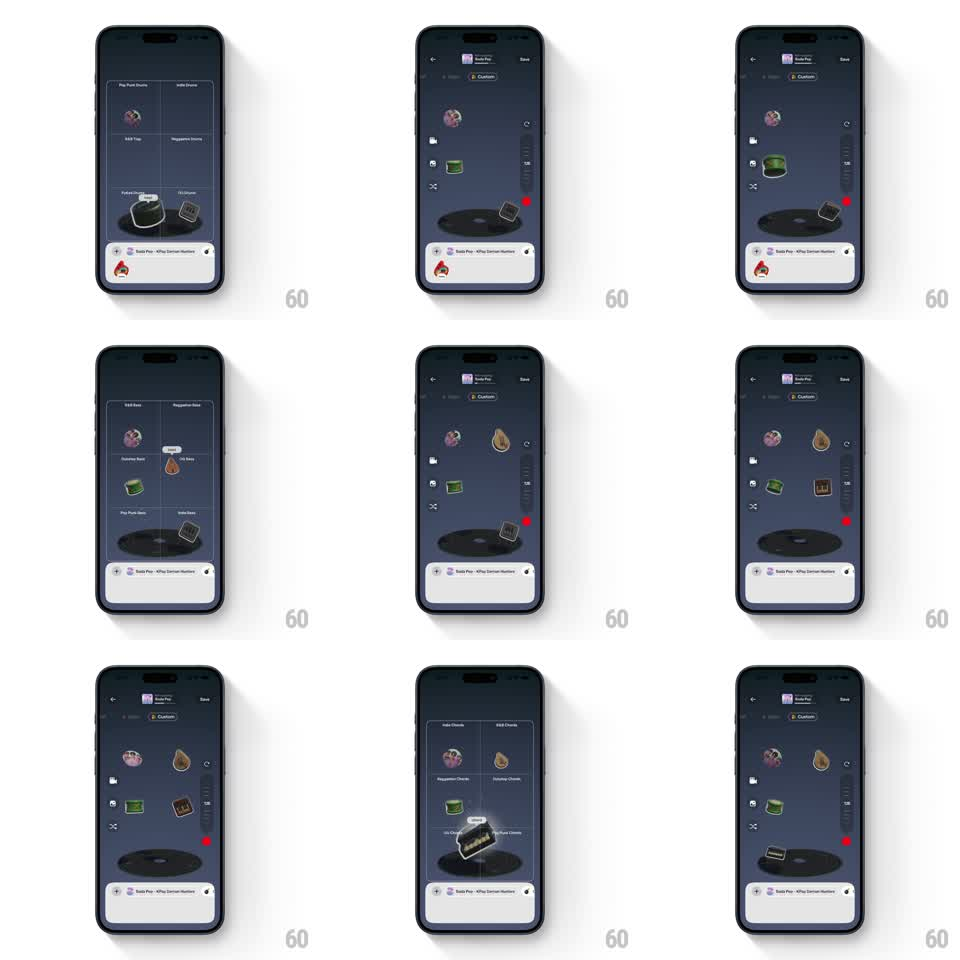

Media
Frame-by-frame

Rebuild this interaction 1:1: Bop's instrument drag-and-drop - tiles for drums and chords fly in from the tray, get dragged across the dark studio, and snap onto slots around the spinning vinyl deck with a bounce, stacking into a playable mix.

Rebuild this interaction 1:1: Bop's instrument drag-and-drop - tiles for drums and chords fly in from the tray, get dragged across the dark studio, and snap onto slots around the spinning vinyl deck with a bounce, stacking into a playable mix.
## Integration
Integration: stack-agnostic spec - springs given as stiffness/damping, timed motions as duration + curve; map every value to your framework and animation library of choice.
## Scene
Dark studio: header (back chevron, "Soda Pop", Custom pill, Save), a large central vinyl deck with faint concentric rings, and instrument tiles - purple drum pad, green drum, brown frame drum - that start in a bottom tray ("Solo Pop - KPop Demon Hunters" now-playing bar) and end up arranged around the deck. A chord-picker overlay briefly shows labeled categories (Indie Chords, R&B Chords...).
## Motion spec
Pattern: drag-to-slot physics, gesture-driven.
- Entrance: tiles slide up from the tray and fan out (stagger 90ms, 300ms ease-out), hovering with a slow bob (translateY +-4px, 2s, offset phases).
- Drag: a touched tile lifts (scale 1 -> 1.08, 150ms) and follows the finger 1:1 with a slight rotation toward the drag direction (+-8deg).
- Snap: releasing near the deck pulls the tile into the nearest slot (spring ~360/22, 250ms) with a squash on land (scaleY 0.9 -> 1); releasing elsewhere springs it back to its hover spot (spring ~300/20).
- Stack: placed tiles settle into orbit positions around the vinyl, each pulsing faintly to the beat (scale 1 -> 1.03, 500ms).
## Calibration
- Placed tiles lock into fixed slots - no free overlap on the deck.
- The snap is magnetic within ~60px of a slot; outside that, the tile returns.
## Reduced motion
Tiles fade into slots (200ms); no bob or rotation.
## Don't miss
- The chord category grid (Indie, R&B, Reggaeton, Dancepop, Lo-fi, Pop Punk) appears as a labeled picker before the chord tiles drop.
- The now-playing bar never leaves the bottom edge.